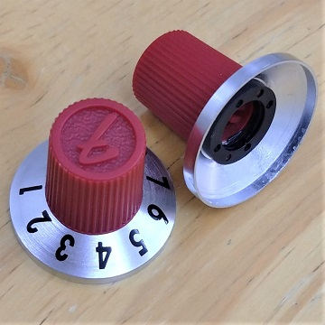

Fender Hammertone Overdrive 解析
2023年09月07日 カテゴリー：修理・改造・解析
Fender Hammertoneシリーズのエフェクターは表面実装部品が使われているため、なかなか解析する人がいないようです。しかしながら1種類くらいは回路を見てみたいと思い、Overdriveを中古で入手し解析しました。KiCadとLTspiceの回路図データはGitHubにあります。

ケースの設計や内部の配線がしっかりしていて、低価格とは思えない作りだと感じました。ただノブは金属部が薄く、取り外す場合は注意が必要です。LEDの輝度調整トリマーを付けられる部分が見えますが、利用するには内部のジャンパー抵抗を取り外す必要があります。
▽回路図
ミッドブーストにはジャイレータ（シミュレーテッドインダクタ）が使われています。設計者のこだわりなのか、バイアス電圧が5Vになっていたり、4.5Vが2ヶ所分けてあったりします。バイパス方式はMOSFETを使ったMillenium 2バイパスです。
ダイオードクリッピングは、ソフトクリッピングとハードクリッピングを組み合わせたタイプです。下記ページで2ステージ回路として紹介されています。
・シングルステージ vs マルチステージ・ゲイン・トポロジー
▽シミュレーション
- PRE-MID BOOST
600Hz付近を11dBブーストできます。
- GAIN
チューブスクリーマーとの比較です。増幅率や低音域の調整具合が少し違っています。
- 内部TONE
Fender The Trapper Dual Fuzzと同じ、10kΩと33nFのローパスフィルタです。トリマーはCカーブではなくBカーブ（直線変化）なので、微調整はやりにくいかもしれません。基本的には最大にしておき、必要に応じてハイカットするという使い方でよいかと思います。
- TONE
チューブスクリーマー（ハイカットのコンデンサなし）との比較です。Hammertone Overdriveの方が高音域寄りの調整となっています。